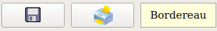

NOUVEAUTÉS LAURUX 3.69
La
table des paramètres :
FIGURE 1 : Paramètres
1) Ecart comptable autorisé : montant au
dessous duquel une écriture d'OD sera passée pour pouvoir lettrer un
règlement.
N° Journal OD :
Indispensable pour pouvoir passer l'écriture ci-dessus.
Attention de bien différencier le journal d'OD
et celui de report à nouveau pour pouvoir pleinement tirer parti des
extraits de compte.
2) C'est le dernier code article référencé
dans la base.
3) Onglet caisse : Pour ceux qui utilisent
uniquement la caisse
Figure 2 : Onglet caisse
Les champs "dernier numéro de ticket" sont
définis à la mise à jour.
Les virements internes sont des comptes dans
lesquels seront passés les règlements caisse. il faut
obligatoirement renseigner ces champs sinon le programme ne se fermera
pas.
Les préférences :
Figure 3 : Préférences
1) Autorise la saisie d'un règlement
négatif dans le nouvel outil saisie des règlements.
2) Rajoute au menu Facturation le menu LCR
Menu général :
Figure 4 : Menu
1) Raccourci pour la nouvelle saisie des
règlements. Le mode de fonctionnement du"bordereaux des règlements" à été
modifié. Les modifications vous seront expliquées en dessous.
L'ancienne version est toujours disponible dans le menu comptabilité et
gestion.
2) Menu des LCR
GESTION
DES RÈGLEMENTS
C'est un outil développé
pour vous aider à passer vos règlements, mais il reste optionnel. Vous
pouvez tout à fait continuer à vous servir de la saisie de la trésorerie.
Vous allez dans : Gestion,
Constantes, Règlements
Figure 5 : Règlements
- La première partie sert à sélectionner votre
mode de règlement
- Le code du règlement est sur 2 caractères
alphanumériques. A noter que lors de la mise à jour les règlements
existants sur la 3.68 seront crées et les clients modifiés il est bien
entendu que ce que vous avez modifié vous même ne peut pas être repris. Il
vous appartiendra de le vérifier et de modifier en conséquence.
- Vous entrez le journal concerné.
- Liaison caisse : C'est la
correspondance entre les règlements caisse et gestion.
* Si une valeurs est indiquée dans la boite de
dialogue (ici chèque) le règlement caisse prendra en compte les paramètres
définis ici.
* S'il n'y a pas de valeur dans la boite de
dialogue c'est que c'est un règlement purement gestion.
* Si un règlement caisse n'a pas de
correspondance il se comportera comme indiqué dans la figure 1 et 2.
- Regroupe les règlements : Si cette case
n'est pas coché vous aurez le détail des règlements de la caisse sinon
vous aurez le total.
- Par compte interne :
* Si cette case n'est pas coché la
contrepartie des règlements se fera sur le compte indiqué dans le journal.
* Si cette case est cochée il faudra
renseigner le n° du compte interne "580xxx" pour faire la contrepartie.
* Si la case saisie par bordereau est cochée
la saisie se fera en deux temps, le premier comme ci dessus avec une
écriture 580/411 puis en 2° une écriture 512/580 qui va solder le compte
580. On aura donc une gestion complète des comptes de virement interne qui
seront obligatoirement soldés comme l'impose les règles comptables.
Pour que le mode bordereau soit fonctionnel
sur les comptes internes il faut que :
° Dans la table des comptes il faut rendre ce
compte lettrable.
° Il faut que ce compte soit lettré et soldé.
° Il ne faut pas que ce compte soit dans le
journal d' à nouveau de la période en cours.
Sinon il reste toujours la possibilité d'en
créer un et partir ainsi sur une base "propre".
- Les LCR : Si besoin va créer une LCR à
l'édition de la facture.
- Le menu comprend dans l'ordre : création,
modification, suppression et quitter.
Puis dans la fiche client :
Figure 6 : Clients
A l'édition des factures, le texte de
règlement se compose avec ces 2 champs. Si le le Mode de règlement existe
dans la base c'est le libellé du règlement qui sera imprimé, si il
n'existe pas ce sera alors le contenu de la boite de dialogue.
Figure 7 : Impression
Les 2 lignes de règlement sont modifiables
Le choix de l'imprimante se fait avec la
boite de dialogue système.
Date de mouvement à la date du document : La
date de sortie des articles de cette facture est par défaut la date à
laquelle on la saisie, si on veut changer cette date par la date de
facturation/bl il faut cocher cette boite. Ces date sont prises en compte
dans "Interrogation des mouvements de stock" pour pouvoir mieux suivre les
entrés/sorties des articles.
Puis on va dans la saisie des règlements
(Figure 4) :
Figure 8 : Saisie des règlements
Zone 1 : On sélectionne le mode de
règlement, on affiche le libellé et dans la ligne en dessous le journal
ainsi que le le compte interne si besoin.
Zone 2 : On peut choisir soit un
client/fournisseur soit un client/fournisseur et un numéro de lot soit un
numéro de document (n° de facture), ces critères vont compléter la zone 4
Zone 3 : On renseigne le tableau zone 4, à
noter que l'on peut aussi régler les BL.
Zone 4 : On construit le règlement, on
sélectionne une ligne par 1 clique et le total des lignes sélectionnées se
retrouve dans zone 5 : montant.
Un double clique sur une ligne
visualise/édite le document, nous permet d'ouvrir la facture 201907927.
Zone 5 : C'est le récapitulatif du
règlement, chaque zone reste modifiable.
Zone 6 : Boutons de choix, le premier pour
valider et le second pour sortir, en modification on a :
qui correspond à validation, suppression,
annule modification, sortie.
Zone 7 : C'est le récapitulatif de tout ce
qui a été passé, 2 cas de figures possible :
- Soit on est pas en mode bordereau :
Le seul code couleur disponible sera le vert
avec ajo. La validation de la saisie générale des écritures peut se
faire avec une contrepartie ou avec un compte banque ou encore avec un
compte virement interne selon la programmation choisie.
- Soit on est en mode bordereau avec 4 codes
couleur :
* Vert avec ajo pour tous les
règlements qui viennent d'être saisie.
* Bleu avec val pour tous les
règlements qui ont étés saisies les fois précédentes.
* Rouge avec sup pour les
règlements bleus supprimés.
* Vert foncé avec mod pour les
règlements bleus modifiés.
Un double clique sur une ligne suffit pour
rappeler le règlement dans la zone 4 et 5.
Zone 8 : Validation et impression, pareil 2
cas de figures :
- Soit on est pas en mode bordereau et on ne
peut que valider/éditer la saisie.
- Soit on est en mode bordereau :
* Si on a une autre couleur que le bleu on
ne va éditer que les ajout en vert et valider tous ce qui n'est pas bleu.
* Si tout est en bleu on va éditer/ valider
le bordereau, les règlements ne pourront êtres repris.

On pourra alors valider/éditer le bordereau
en entier, les écritures ne seront plus reprises.
Si vous utilisez la saisie des règlements en
facturation (Figure 7) c'est cette interface qui s'ouvrira après l'édition
de la facture, le client sera alors bloqué sur celui facturé.
Zone 9 :
- Le bouton Somme ouvre le programme de
recherche par somme.
- Si vous sélectionnez Zone 3 -> Bl vous
pourrez mettre le bouton Sélection à Facturation et ainsi générer une
facture au lieu d'un règlement.
SAISIE AU CLAVIER :
A partir du numéro client F2 pour rechercher
le client ou le fournisseur, entrez vos critères de recherche puis la
flèche du bas x 2 sélectionne la 1° ligne du tableau, on navigue dedans
avec les flèches du bas, du haut, pg_down et pg_up, on valide la ligne
choisie avec enter.
On passe à la zone 4 avec la fèche du bas :
Flèche du bas ou du haut pour se positionner sur les lignes, touche espace
pour sélectionner une ligne et touche TAB pour aller à la zone 5 =>
Date
On passe à la zone 6 bouton Validation,
Enter on valide et revient au numéro client ou TAB et on passe au bouton
sortie Enter on sort du programme ou TAB on va au montant et on boucle.
A noter lorsque vous trouver les champs
comme ci-dessous :
Les touches TAB, flèche du bas, enter
sélectionnent la zone suivante
Les touches Shift Tab, flèche du haut
sélectionnent la zone précédente
Si la zone sélectionnée contient une date
alors F2 ou un double clique feront apparaître le calendrier.
LES EXTRAITS DE
COMPTES ET LETTRAGE
On peut maintenant
concaténer plusieurs exercices comptables et même faire des sélections par
date à cheval sur plusieurs exercices. De même pour le lettrage, on ne
lettre plus les reports à nouveau mais les factures correspondantes. Une
reprise du lettrage sera parfois obligatoire.
Figure 8 : Extrait de
compte
On voit ci-dessus un
extrait de compte du 01/12/17 au 30/05/20 avec un recalcule du report
puisque l'exercice commence le 01/10
Vous remarquerez qu'un
bouton est prévu pour l'édition.
LES RECHERCHES
Nouveaux formats de
recherche pour les articles, codes comptables, clients, fournisseurs. Les
recherches se font en multicritères voir l'exemple :
Figure 9 : Recherche articles
Dans Paramètres, Couleurs vous pouvez définir
de quelle couleurs seront les lignes ci-dessus.
Figure 10 : Recherche comptes
GESTION DES TARIFS
En facturation vous pouvez
changer le tarif appliqué en changeant le type de client:
Figure 11 : Tarif
Vous utilisez ici le "Tarif par type client",
de base il est celui de la fiche client modifiable selon vos besoins.
A la saisie des articles une bulle s'affiche
pour vous indiquer quel tarif est appliqué, un double clique sur le "prix
HT" vous permet de sélectionner un autre tarif pour l'article saisie :
On remarque que la remise client a pris le
pas sur la remise type client.
ÉDITION PAR
CATÉGORIE DE CLIENT
Pour les éditions de
balance, écritures non lettrées et écritures non justifiées on a le cadre
ci-dessous qui permet de sélectionner une ou plusieurs catégories de
client à éditer. Si aucune sélection n'est faite tous les clients seront
édités.
Figure 12 : Impressions comptables
La sélection des catégories se fait avec les
touches CTRL et/ou majuscule combinée avec la souris, avec un petit peu
d'habitude c'est pratique et efficace. Le même système de sélection
s'applique sur tous ce qui est choix des familles d'article.
Documentation sur les
mouvements de stock
Documentation
sur les statistiques et relevés détaillés